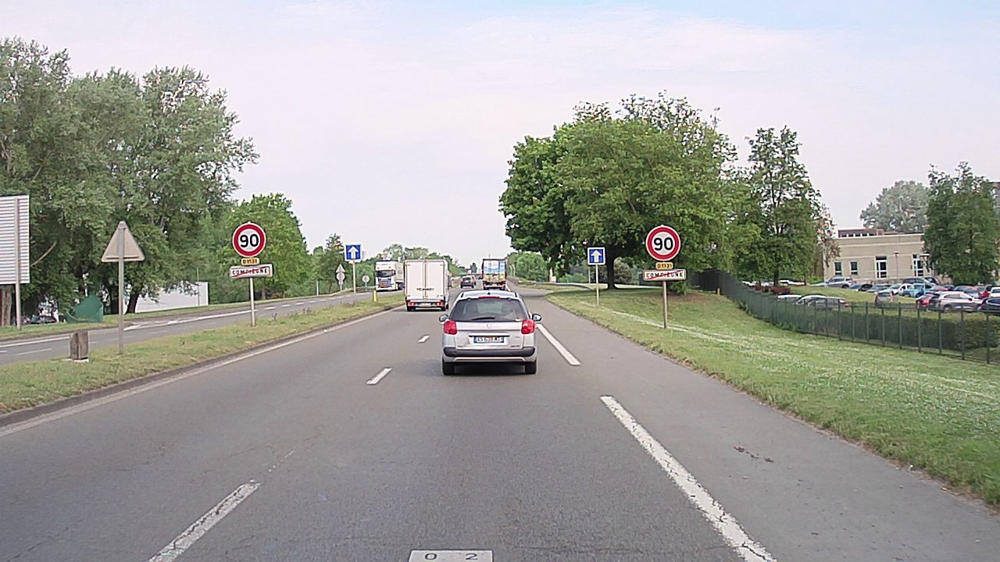

Automatic Image Annotation for Mapped Features Detection
Dataset Overview
It is designed for training and evaluating pole base detection models for cameras using automatic annotations instead of manual ones,
The dataset includes a collection of images with automatic annotations generated using three methods proposed in the associated paper for training, as well as a collection of manually annotated images for validation. Additionally, it provides all the necessary data to recompute the automatic annotations using each method.
Purpose
This dataset was created to demonstrate the achievable performance of a pole base detector based on YOLOv7, trained using automatic annotations to minimize or eliminate the need for costly human labeling. By showcasing the capabilities and limitations of automatic annotations, as well as the resulting detection performance, This dataset paves the way for generating vast amounts of automatically labeled data and developing detectors specifically optimized for road environments and diverse use cases.
The final purpose of these detectors is to support autonomous vehicle localization by providing additional positioning information through the association of detections with georeferenced poles from the HD map.
Dataset Composition
It consists of two main components:
Dataset for Object Detection:
This includes images and their corresponding annotations, enabling direct training and validation of detection models. Additionally, the detection weights used to produce the results presented in the associated paper are provided.Raw Data for Automatic Annotation:
This contains all the necessary data to regenerate the annotations in the training folder, allowing users to reproduce or customize the annotation process.
It contains the following data:
- Number of images: 5,391 image for the training and 939 images for the validation
- Image resolution: 1280x720 pixels
- Training annotations: Each image in the training set is provided with automatic annotations generated through three distinct methods: an image segmentation approach, a LiDAR-based approach, and a map-driven approach.
- Validation annotations: Images in the validation set were annotated by five different humans and validated by an additional one. While efforts were made to ensure accuracy, errors or missed pole bases may still occur. Bollards were intentionally excluded from annotations, as they are not represented in our HD maps. For subsequent localization tasks, we aim to develop a detector specifically designed to detect only mapped elements, which justifies this decision.
- Environment: The images were captured in both urban and rural settings within the small French city of Compiègne (approximately 70,000 residents), showcasing a variety of lighting conditions and weather scenarios.
Raw data for automatic annotations
- High-definition vector map: A CSV file containing the georeferenced positions of all pole bases (except bollards not included in the map) in the city of Compiègne. The map was acquired in 2022, and since roadworks have taken place afterward, some errors may exist.
- Pre trained image and pointcloud segmentation weights: The used weights by lidar-based and image segmentation-based methods are provided.
- Lidar pointclouds: For each image, the corresponding point cloud is provided to extract poles and annotate them using the lidar-based method or to refine the map-based approach.
- Sensor calibration: The training and validation sets include their own calibration parameters, enabling transformations between the map frame, vehicle frame, image frame, and lidar frame.
- Vehicle reference poses: The training set consists of images extracted from three different sequences, while the validated set is derived from two different sequences. The sequence of each image can be identified by its filename, which corresponds to the acquisition timestamp. For each sequence, the reference poses of the vehicle are provided to transform the map data into the vehicle frame for the map-based automatic annotation approaches.
Usage
This dataset is intended for training, validating, and testing pole base detection algorithms. It can be used with object detection models such as YOLO adding bounding boxes around each pointwise annotations to provide visual context as described in the associated paper.
The dataset is hosted on heudiasyc laboratory dataset platform and can be downloaded directly here.
The dataset is provided under the Creative Commons Attribution 4.0 International (CC BY 4.0) License, allowing for both academic and commercial use with proper attribution.
If you use this dataset in your research or projects, please cite the associated paper as follows:
Example Visuals
Below are examples of images from the dataset with annotations.


The methods used to generate automatic annotations and the detection results obtained using the dataset are demonstrated in a video available on YouTube.
The video showcases a segment of a driving sequence from the dataset used in this study and provides a detailed presentation of the results.
Initially, the video highlights the automatic annotations generated by the three methods proposed in the paper. It then demonstrates the process of merging these annotation sources, using different colors for the crosses representing annotations to indicate the level of consensus among the methods. Specifically, annotations validated by all methods are distinguished from those that are ambiguous.
Next, the video illustrates how black patches were added to address uncertainties in the annotations. Finally, it presents the results of pole base detection using a YOLOv7 neural network. This network was trained on high-consensus automatic annotations, with the input images modified to mask ambiguous objects.
Automatic annotations
Map-based annotation
A first approach is to use a 2D High Definition (HD) vector map along with a high accuracy localization system. The poles georeferenced within the field of view of the camera are extracted from the map and projected onto the images. Even though the poles contained in the map concern furniture (such as traffic signs, traffic lights or streetlamps) which is stable over time, the map can still become outdated. So, false positives and negatives are inevitable. To project the 2D map features at the ground level, a lidar is used to estimate the ground and check for occluded pole bases. To mitigate the risk of false positives and enhance positioning accuracy, we refrain from annotating distant poles, even if it may introduce the possibility of false negatives.
More details are provided in the conference paper published at IV2023 and in the thesis manuscript.
Image segmentation-based annotation
We use the HRNet image semantic segmentation neural network and pre-trained on the BDD100K dataset to extract pole bases from estimated segmentation masks. We combine all pole-related classes to form entire pole clusters to check if they are connected to ground pixels. It ensures that only large clusters of pole pixels are considered, thus minimizing the influence of poor segmentation. However, some poles can be merged during clustering. To avoid this, we have chosen to extract any small clusters of pixels lying on the ground. Some wrong annotations can be introduced in the process: some correspond to bollards and some to other errors. However, it is capable of annotating more pole bases than the map-based approach.
More details are provided in the conference paper published at ITSC2023 and in the thesis manuscript.
Lidar-based annotation
We segment the point cloud using Cylinder3D, a 3D convolution network pre-trained on SemanticKITTI. Then, we group the points classified as poles into clusters to identify each pole individually and fit a 3D bounding box. The pole base 3D coordinates corresponds to the center of the bottom face of the bounding box, which is in turn projected on the image to generate the annotation. Similarly to the image segmentation annotation, the neural network trained for the lidar segmentation consider that bollards belong semantically to the pole class. Far poles are not annotated due to the data sparsity and the lack of points.
More details are provided in the conference paper published at IROS2024 and in the thesis manuscript.
Sensors
Localization reference system: All vehicles are equipped with a Novatel SPAN-CPT GNSS receiver with RTK capabilities and is loosely coupled with a high-accuracy IMU. GNSS PPK corrections are applied using Novatel’s software, enabling centimeter-level accuracy localization for each vehicle. This system provides the reference state used for localization evaluation. For PPK, more than ten reference stations within a 50 km radius around Compiègne are maintained by IGN, the French national institute for geographic information. Additionally, a reference station has been deployed atop one of the university buildings, by using a Septentrio AsteRx SB PRO Connect GNSS receiver. This station can be used for PPK but is generally employed in real-time tests where high-precision localization is required by providing RTK corrections. The pose of each vehicle is provided at a frequency of 50 Hz. Additionally, all dynamic and kinematic information is fully accessible.
Hesai Pandora sensor kit: This sensor is composed of a lidar delivering 3D scans of the environment using 40 vertically stacked lasers with a non-linear distribution and five monocular cameras located below the lidar. Four of these cameras are grayscale wide-angle with a horizontal field of view of \(129^\circ\), providing full coverage of the vehicle’s surroundings as they face the front, left, right, and rear. Consequently, both the lidar and cameras cover the same area. The fifth camera is a front-facing color camera with a horizontal FOV of \(52^\circ\). The cameras are synchronized with the lidar, capturing images when the lasers align with the cameras’ focal axis. Both the extrinsic and intrinsic calibrations of all sensors use factory settings. With a theoretical range of 200 meters, the system operates at a frequency of 10 Hz.
Citation
@inproceedings{noizet2024,
author = {Noizet, Maxime and Xu, Philippe and Bonnifait, Philippe},
title = {Automatic {Image} {Annotation} for {Mapped} {Features}
{Detection}},
booktitle = {2024 IEEE/RSJ International Conference on Intelligent
Robots and Systems (IROS)},
pages = {9367 - 9373},
date = {2024-10-16},
url = {https://ieeexplore.ieee.org/document/10801773},
doi = {10.1109/IROS58592.2024.10801773},
langid = {en}
}